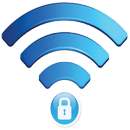

قوانین مربوط به شبکه سيمي
شبکه دانشگاه متشکل از صدها کامپیوتر ، چاپگر ، سرور و دیگر تجهیزات شبکه میباشد که امکانات مختلقی را برای شما فراهم میکند و البته استفاده از این امکانات مستلزم قبول کردن مسئولیت استفاده از آن از قبیل حفاظت از حریم کاربران دیگر و رعایت مقررات آن نیز میباشد .
این قوانین در دو قسمت اعمال میگردد:
1) قوانین در سطح شبکه داخل دانشگاه
2) قوانین در استفاده از شبکه های خارج از دانشگاه
ما انتظار داریم شما این قوانین را رعایت کنید و رعایت آن را به دیگران نیز گوشزد کنید و درصورتی که نسبت به آن اعتراض یا پیشنهادی از طریق بخش نظرات و پیشنهادات برای ما ارسال نمائید.
موارد زیر بصورت خلاصه مقررات استفاده از شبکه داخلی را روشن میسازد:
1) حریم های اخلاقی را نقض نکنید.
2) کلمات عبور خود را در اختیار دیگران قرار ندهید.
3) به حریم کاربری دیگران تجاوز نکنید.
4) از محتوای دیجیتالی دارای حق معنوی (copy right) سوء استفاده نکنید.
5) از امکانات موجود و در اختیار خود برای خرابکاری و صدمه به دیگران بهره نبرید.
6) از ابزار های شنود دیجیتالی جهت جمع آوری محتوای تبادلی بین ایستگاها و یا سرویس دهنده ها استفاده نکنید
7) از منابع سیستم با رعایت موارد ایمنی استفاده نمایید.
8) هیچگاه سعی در ایجاد اضافه با بروی وب سرور و یا ایجاد میل های ناخواست بروی میل سرور ننمایید.
9) از تجهیرات در اختیار خود بخوبی مراقبت کنید.
موارد زیر بصورت خلاصه مقررات استفاده از شبکه های خارجی را روشن میسازد:
1) در ارسال محتوای دیجیتالی به خارج از دانشگاه با برچسب دانشگاه از قبیل ارسال از طریق ایمیل انشگاه قوانین و مقررات کشوری و همچنین اخلاقی را رعایت نمایید.
2) تجهیرات و امکانات خود را بصورت مجازی در اختیار کاربران خارج از دانشگاه قرار ندهید
3) از منابع در اختیار را برای انجام عملیات بار گذاری مجازی بروی شبکه های دیگر راسا یا ثالثا استفاده ننمایید
4) جهت تبادلات داده ای مهم از قبیل بانکداری الکترونیک از ارتباط https استفاده کنید
قوانین مربوط به شبکه بیسیم
شبکه بیسیم در کنار شبکه سیمی جهت تسهیل ارتباط کاربران با شبکه ایجاد در حال توسعه میباشد. جهت استفاده از این شبکه رعایت و ذکر نکات زیر ضرروی است:
1) استفاده و ایجاد نقاط تماس (access points) شخصی و بدون هماهنگی با مرکز انفورماتیک ممنوع است
2) همواره در نظر داشته باشيد که ارتباط بیسيم نسبت به ارتباط سیمی نا امن تر است لذا موارد امنیتی را رعایت کنید.
3) پوشش بیسیم به لحاظ ماهیت آن و نا تمام بودن پروژه تنها در برخي نواحی موجود است.
4) هنگام اتصال به شبکه بیسیم دانشگاه از واقعی بودن آن اطمینان حاصل کنید ( کمک) تا بصورت ناخواسته در دام یک نقطه تماس مجازی گرفتار نشوید.
5) از ابزارهای اختلال و نفوذ در شبکه بیسيم استفاده نکنید.
ایجاد و رفع مشکلات Account ها جهت اتصال به Domain و اینترنت
اکانتهای دانشجویان جدیدالورود در ابتدای هر نیمسال تحصیلی طبق فرمت ذیل توسط مرکز انفورماتیک ایجاد شده و به كارشناسان كامپيوتر دانشكده ها واگذار می گردد:
نام کاربری (username): شماره دانشجویی رمز اولیه: شماره شناسنامه
پس از آن، درصورت بروز مشکل در اتصال به شبکه و اینترنت دانشجويان بايستي به كارشناس كامپيوتر دانشكده مراجعه كرده و درخواست رفع مشکل نمایند.
اکانتهای كاركنان محترم و اعضاي محترم هيات علمي توسط مرکز انفورماتیک طبق فرمت ذیل ایجاد می گردد:
نام کاربری بصورت تر کیب نام خانوادگی و نام آنها با فرمت lastname.firstname و همچنین رمز مورد در خواست خودشان می باشد.
روال رفع مشکلات احتمالی در اتصال به Domain و اینترنت نیز به شرح ذیل خواهد بود:
مسئولیت رفع مشکلات با کارشناسان واحد مربوطه می باشد، لذا لازم است در ابتدا با ایشان تماس حاصل گردد و تماس مستقیم با کارشناسان واحد IT مجاز نمی باشد. در صورتیکه کارشناس مربوطه تشخیص دهد که مشکل عدم اتصال مربوط به اکانت می باشد آنگاه شخص مذکور با واحد انفورماتيك تماس گرفته و درخواست رفع مشکل می نماید.
نکات بسیار ضروری در رابطه با نگهداری و صیانت از حساب کاربری:
• در صورت استفاده غیر صحیح از امکانات فراهم شده (واگذاری Account به غیر و ....) ، موارد به صورت مرتب گزارش گیری شده و منجر به قطع سرویس شخص خواهد شد. (این مورد، مخصوصاً در رابطه با افرادی که به دلیل نوع شغل از Account های با بازه زمانی نامحدود برخوردار می باشند به طور جدی بررسی خواهد شد )
• اعضای محترم هیأت علمی دارای Account های نامحدود می باشند که علاوه بر استفاده از اینترنت ، برای ورود به بخش مدیریتی مربوط به صفحه شخصی استاد و ویرایش اطلاعات مربوطه نیز مورد استفاده قرار می گیرد. لذا مراقبت جدی از رمز مربوطه،ضروری به نظر می رسد و در صورت بروز مشکل در این زمینه مرکز انفورماتیک مسئولیتی بر عهده نخواهد داشت.
• جهت تسهیل در امور تحقیقاتی اعضای محترم هیأت علمی که پهنای باند بیشتری مورد نیاز می باشد، اینترنت دانشگاه همه روزه از ساعت 12 الی 13:30 صرفاً به این امر اختصاص یافته است. بدیهی است در این ساعات اکثریت کاربران غیر هیأت علمی، امکان استفاده از اینترنت را ندارند.
• پهنای باند و مدت زمان استفاده از اينترنت هر کاربر بسته به سطح وی تعریف و محدود میگردد و این محدوده توسطه شورای انفورماتیک مصوب و تعیین گرديده است و هرگونه تلاش جهت اختصاص پهنای باند بیش از آنچه برای هر کاربر در نظر گرفته شده غیر قانونی تلقی شده و در صورت مشاهده برخورد خواهد شد.

| کمینه نیازمندی ها برای اتصال به شبکه سیمی | کمینه نیازمندی ها برای اتصال به شبکه بیسیم |
| 1) پایانه کاربری با حداقل امکانات سخت افزاری مندرج | 1) پایانه کاربری با حداقل امکانات سخت افزاری مندرج |
| 2) رابط ااتصال شبکه سیمی -network interface card | 2) رابط ااتصال شبکه بیسیم -Wireless network interface card |
| 3) نقطه اتصال شبکه (netwok connection node) فعال | 3) قرار گرفتن در ناحیه تحت پوشش |
| 4) کابل ارتباطی بین پایانه و نقطه اتصال -patch cord | 4) سیستم عاملی با امکان استفاده از شبکه TCP/IP |
| 5) سیستم عاملی با امکان استفاده از شبکه TCP/IP | 5) دریافت حساب کاربری |
| 6) دریافت حساب کاربری | 6) اشتراک در دامنه ZNU |
| 7) اشتراک در دامنه ZNU |
آييننامهي استفاده از پست الكترونيكي مجموعه ضوابطي است جهت حفظ امنيت و استفادهي صحيح از امكانات و خدمات پستالكترونيكي دانشگاه زنجان كه در اختيار مجموعهي دانشگاهيان قرار داده ميشود.
1) - فضای روی سرور ایمیل
1-1) هیات علمی: مجموع تمامی شاخه ها M 200
1-2) دانشجویان: مجموع تمامی شاخه ها M 100
1-3) دیگر کاربران: مجموع تمامی شاخه ها M 50
کاربران میتوانند میزان فضای استفاده شده توسط شاخه ها را از طریق Folder Sizes که در صفحه ی اصلی ایمیلشان می باشد مشاهده فرمایند. و در صورت بالا بودن این فضا ، کاربران موظف به کاهش آن می باشند و مسئولیت عدم دریافت ایمیل به علت پر بودن فضا به عهده ی خود افراد می باشد.
2) - امنیت
2-1) كاربران مسئول حفاظت از اکانت کاربری و رمز عبورشان هستند و از اين اکانت بايد در حدود اختيار دادهشده استفاده کنند. هر کاربر در برابر کليهي تعاملاتی که با استفاده از پست الکترونيک و با اختيارات اکانت کاربري خود انجام می دهد مسئول است.
2-2) دستيابی به اکانت کاربری نبايد به امانت داده شده يا فروخته شود.
2-3) علاوه بر مرکز انفوماتیک كاربران بايد از نامههاي مهم و اطلاعات ضروري خود پشتيبان تهيه نمايند.
2-4) کاربران بايد راهنماهايی که از طرف مسئولين پست الکترونيک دانشگاه جهت حفظ امنيت اطلاعات و سهولت در کار، روی وب سايت دانشگاه قرار داده می شود را مطالعه و ابراز عدم آگاهی از موارد اعلام شده ننمايند.
2-5) همهي کاربران بايد از ضد ويروس مناسب روي كامپيوترهاي خود استفاده نموده و مرتب آن را به روز نمايند.
2-6) کاربران بايد هنگام بازکردن نامههایی که فرستندگان آنها را نمی شناسند هشيار بوده و پيوست نامههای ناشناس را باز نکنند، در غير اينصورت حتماً آنها را ويروسيابی نمايند، کليهي نامهها و پيوست های رمز دار يا فشرده شده بايد رمز گشایی، باز و سپس ويروسيابی شوند.
3) – محرمانگي
3-1) کاربران در استفاده از پست الکترونيک برای نامههای محرمانه بايد کاملاً محتاط باشند و نبايد گمان شود پست الکترونيک کاملاً شخصی و محرمانه است.
3-2) نبايد بدون گرفتن مجوزهاي لازم جهت ارسال يا دريافت اطلاعاتی با محرمانگی سطح بالا از سيستم پست
الكترونيكي استفاده گردد.
3-3) بايد توجه کرد نامههای محرمانه و حساس حتماً قبل از ارسال رمز نگاری شوند و حتی الامکان نامههایی که دارای محرمانگی زيادی هستند توسط پست الکترونيک به شبکههای خارجی ارسال نگردند.
3-4) کاربران نبايد نامههای داخلی با محتويات حساس و محرمانه را به حسابهای کاربری شخصی روی شبکههای خارجی ارسال نمايند. مگر اينکه در هر دو زمان ارسال و ذخيره سازی رمز گذاری شوند.
3-5) سوء استفاده از اختيارات اداري و آموزشي و در اختيار قرار دادن بدون مجوز اطلاعات شخصي افراد يا تغيير اطلاعات به نفع يا ضرر صاحب آن، خلاف آيين نامه مي باشد و عامل محدوديت هاي بيشتري در دستيابي به اطلاعات براي فرد خطاكار است.
4) – سوءاستفاده
سوء استفاده از آدرس پستالكترونيكي ممنوع است، در صورت مشاهدهي موارد سوء استفاده از آدرس پست الكترونيكي خود يا ديگران، مسئولين ذيربط کاملاًً مجاز به باز پسگيری اين امكانات و خدمات ميباشند، موارد زير در اين زمينه قابل ذکر است :
4-1) سرويسهاي پست الکترونيک نبايستی براي اهداف غير معقول مانند موارد زير استفاده شوند:
1. ارسال نامهها و مطالب غير مجاز و آزار دهنده براي ديگران
2. فعاليتهای تجاری، مگر آنكه طبق مقررات اجرايي دانشگاه تعريف شده و مجاز باشند.
3. دخالت در فعاليت کاربران
4. استفادهي شخصي به نحوي كه با هدف سازماني مغاير باشد.
5. استفادههاي مغاير با آيين نامهها و سياستهاي دانشگاه
6. ارسال نامههاي زنجيرهاي و نامههاي ناشناس
7. ارسال غير موجه يك نامه بصورت تكراري به يك يا تعدادی از گيرندگان
4-2) ارسال نامههاي الكترونيكي با اکانت کاربری ديگران ممنوع است.
4-3) آسيب رساندن به تجهيزات و امكانات مراکز ارائه کنندهي سرويسهای پست الکترونيک دانشگاه زنجان ممنوع است.
الف- ورود اطلاعات و درج اخبار در وب سایت دانشگاه زنجان
طراحی و پیاده سازی نسخه جدید وب سایت دانشگاه در واحد انفورماتیک انجام شده و پس از ورود اطلاعات اولیه در سال 1386 راه اندازی گردیده است و از آن پس با عنایت به اینکه بروزرسانی حجم انبوه اطلاعات بطور متمرکز غیرممکن بوده است، بنا به درخواست مرکز انفورماتیک، مدیران بخشهای مختلف دانشگاه، طبق نامه های ارسالی اسامی افراد دارای مجوز دسترسی جهت درج اخبار و بروز رسانی وب سایتها را تحت عنوان رابطین خبری و بروزرسانی اطلاعات
به واحد انفورماتیک معرفی نموده اند. این افراد با در اختیار داشتن password های شخصی امکان ورود اطلاعات را در حیطه واحد مربوطه و صفحه اصلی وب سایت دارا می باشند. بدیهی است مسئولیت محتوای اخبار و اطلاعات درج شده بعهده نفرات معرفی شده و مسئولین آنها بوده و واحد انفورماتیک امکان نظارت لازم بر محتوای اخبار و اطلاعات درج شده را ندارد.
در رابطه با محتوای اطلاعات و عناوین اخبار و اطلاعیه های قابل ارائه در سایت نیز، رابطین مذکور ملزم به رعایت بندهای تأیید شده در شورای انفورماتیک دانشگاه
می باشند.
ضمناً صفحات وب سایت اساتید نیز در اختیار کامل خود استاد بوده و لذا مسئولیت اطلاعات درج شده بعهده ایشان می باشد.
با عنایت به اهمیت موضوع، ضروری است در صورت اطلاع یافتن سایر افراد از password های فوق الذکر، موارد سریعاً به واحد انفورماتیک اعلام گردد تا نسبت به تغییر آنها اقدام گردد.
*** ذکر این نکته ضروری بنظر می رسد که برخی از واحدها شامل دفتر ریاست و روابط عمومی، مرکز رشد واحدهای فناوری، انجمن های علمی دانشکده ها، تشکلها و کانونهای فرهنگی دانشجوئی با در اختیار داشتن نیروهای متخصص، مستقیماً اقدام به طراحی وب سایتهای خود نموده اند و علاوه بر امکان ورود اطلاعات، امکان تغییر در ساختار وب سایت و طراحی صفحات خود را نیز دارند. لذا در رابطه با بخشهای دانشجویی فوق الذکر، مسئولیت نظارت بر محتوای اطلاعات درج شده بعهده معاونت محترم دانشجویی فرهنگی می باشد و صدور مجوز برای واگذاری فضای وب سایت نیز تنها از طریق ارسال نامه معاونت دانشجویی فرهنگی در قالب مشخص
به واحد انفورماتیک مقدور می باشد. در مورد سایر بخشهای اشاره شده، این مسئولیت بعهده مدیر واحد مربوطه خواهد بود.
ب- امنیت سرویس دهنده ها و کدنویسی وب سایت در مقابل حمله هکرها
خطر دوم در رابطه با امنیت اطلاعات در مقابل هکرهایی می باشد که با یافتن نقاط ضعفی در سرویس دهنده ها و کدهای وب سایت می توانند اقدام به نفوذ، خرابکاری و تغییر صفحات نمایند. واحد انفورماتیک تا حدامکان تلاش خود را در جهت افزایش ضریب امنیت اطلاعات می نماید.
لازم به یادآوری است واحدهایی که خود اقدام به طراحی وب سایت نموده اند (شامل دفتر ریاست و روابط عمومی، مرکز رشد واحدهای فناوری و واحدهای دانشجویی) بعضاً بدلیل ضعف برنامه نویسی، ضریب امنیت بالایی از نظر نفوذ هکرها ندارند و لذا مسئولیت هک شدن و نفوذ در این سایتها بعهده مسئولین مربوطه می باشد و واحد انفورماتیک در این خصوص مسئولیتی بر عهده نخواهد گرفت.
ج- راهکارهای افزایش امنیت اطلاعات
1. ضروری است مدیران محترم، در صورت تغییر افراد دارای مجوزهای ورود اطلاعات (رابطین خبری و بروز رسانی سایتها)، سریعاً موارد را بصورت کتبی به واحد انفورماتیک اعلام نمایند تا نسبت به غیرفعال نمودن password های قبلی و واگذاری password های جدید اقدام گردد.
2. رابطین خبری حق واگذاری password به دیگران را ندارند و مسئولیت اخبار درج شده از طریق password مربوطه بعهده خود شخص می باشد و لازم است در صورت اطلاع یافتن سایر افراد از رمز، موارد را سریعاً به واحد انفورماتیک اعلام نمایند.
3. در درج اخبار حساس، تأیید کتبی خبر توسط مدیر مربوطه ضروری به نظر می رسد. ضمناً مدیران واحدها موظف به بررسی محتوای اخبار بطور مرتب می باشند تا از ورود اطلاعات ناخواسته جلوگیری گردد.
4. نظارت بر محتوای اطلاعات سایتهای تشکلهای دانشجویی بسیار ضروری بنظر می رسد که این امر بر عهده معاونت دانشجویی فرهنگی می باشد.